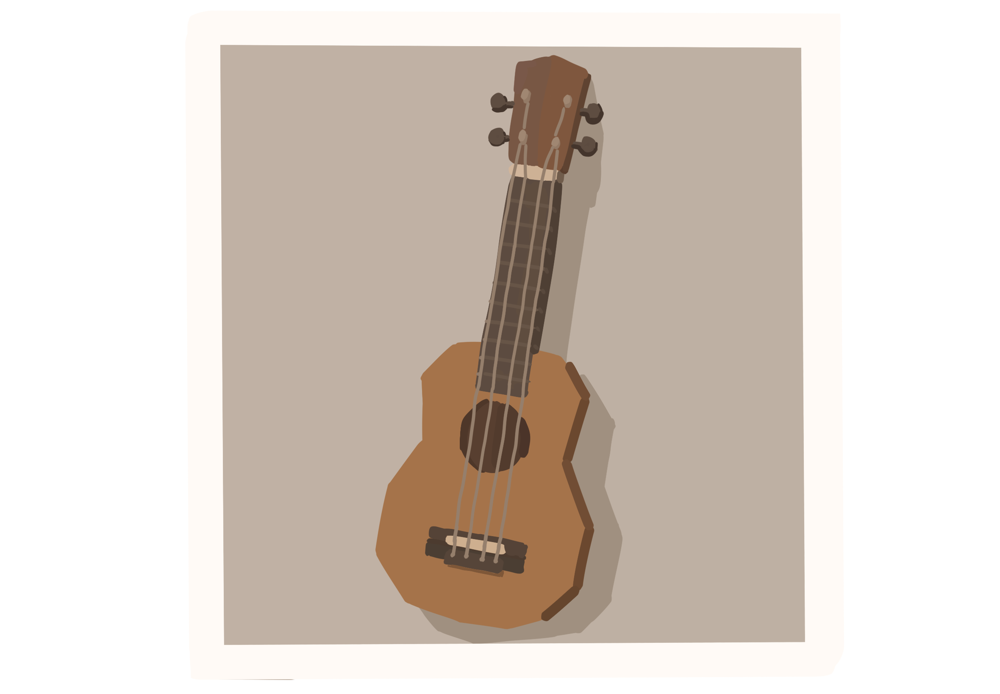
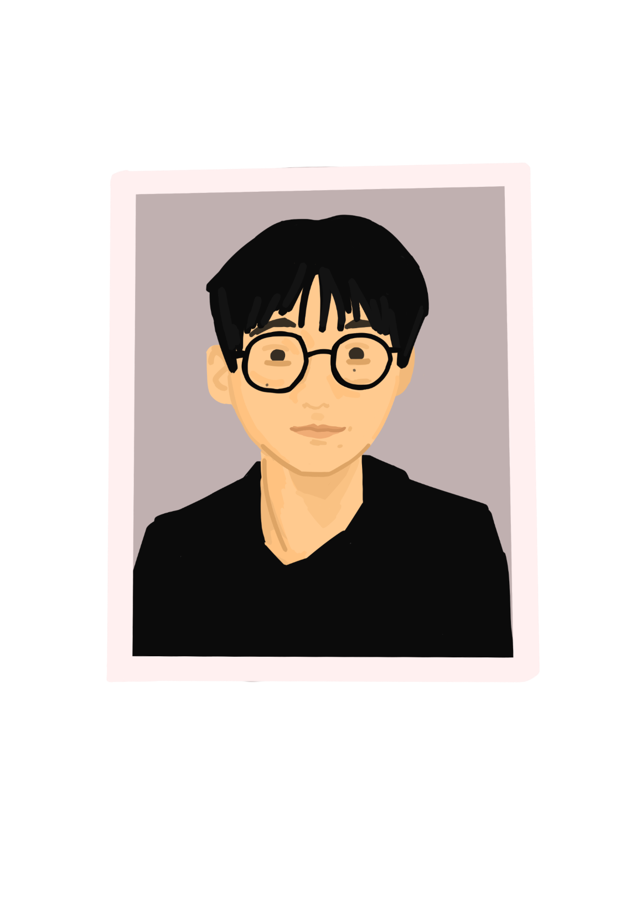
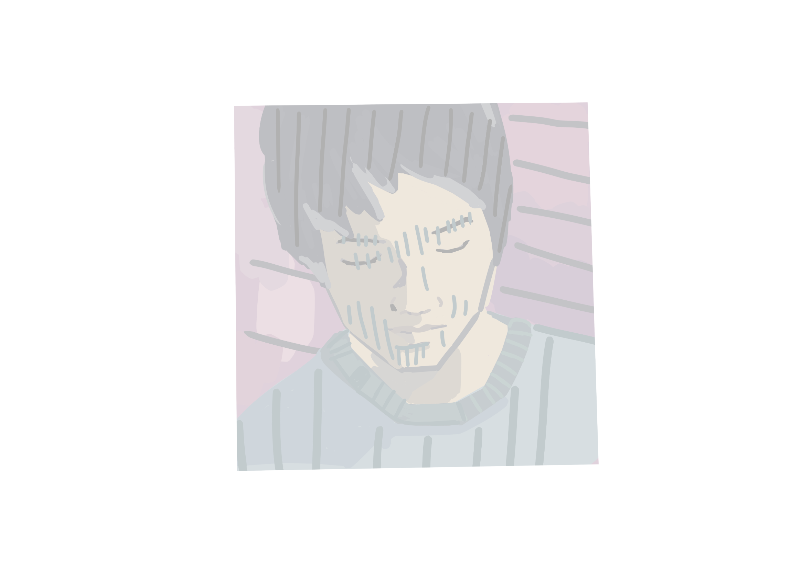

Digital Illustrations Portfolio
I enjoy creating digital illustrations using Procreate and its default brushes. I like experimenting with colors, textures, and different ways of expressing my creativity through art. Recently, I've been illustrating in Life is Strange art style! It's one of my favorite games. Below are some examples of my Life is Strange-inspired drawings from a portfolio I created for a project in another course!


